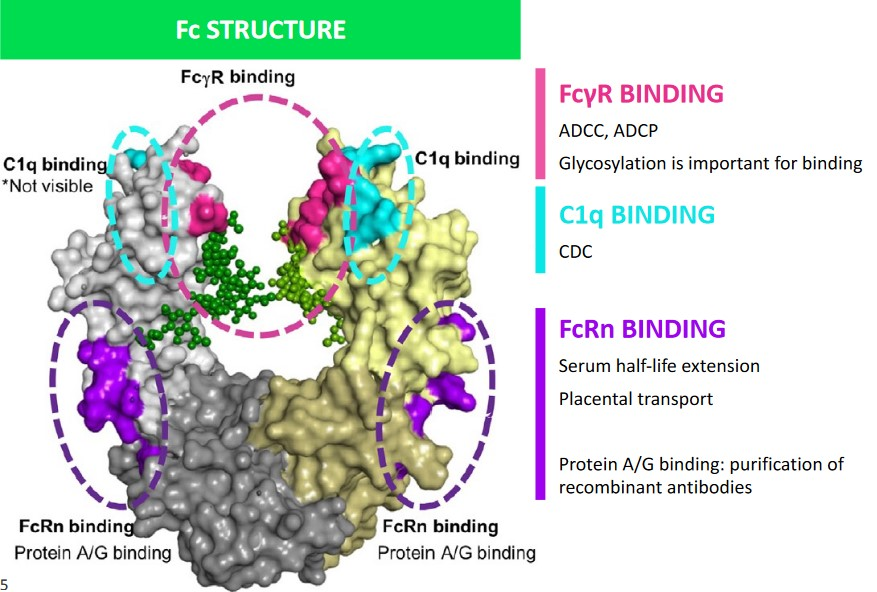
2 Therapeutic Antibody Design
This week’s (i.e., week 2) lecture focuses on the following topics:
- Antibody effector functions
- IgG subclasses and their effector functions
- Approaches to making therapeutic antibodies
- Understanding disease biology
- Therapeutic antibody design
2.1 Surfaces of the Crystallizable Fragment (i.e., Fc)
Different surfaces of the Fc each perform a different function:
Fc\(\gamma\)R Binding
Here, glycosylation is important for binding. This is also the site of ADCC1 and ADCP2.
C1q Binding
This performs CDC.
FcRn Binding
Protein A/G binding allows for the purification of recombinant antibodies.
This receptor is also responsible for placental transport and serum half-life extension (see below).
2.1.1 Complement System Recruitment
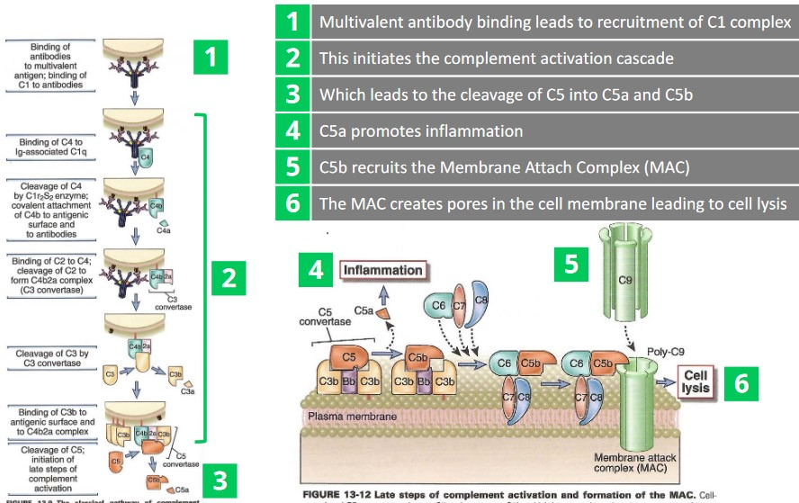
There are six main steps:
- A multivalent antibody binds and recruits a C1 complex.
- Step 1. ends up initiating a complement activation cascade.
- C5 is cleaved into C5a and C5b as a result of 2.
- C5a promotes inflammation.
- C5b recruits the Membrane Attachment Complex (i.e., MAC)
- The MAC creates pores in the cell membrane - this leads to cell lysis (and eventually, death).
2.1.2 Recruiting NK Cells and Macrophages
The following process is that of Antibody-Dependent Cellular Cytotoxicity:
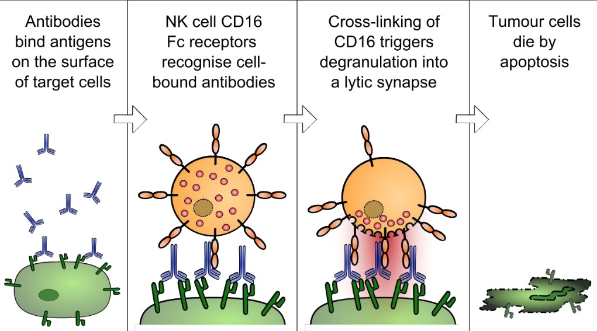
Once an antibody is bound to the surface of an antigen, an NK cell’s CD16-Fc receptors recognize these antibodies.
As CD-16 are crossed linked, this causes the affected cell to die by apoptosis.
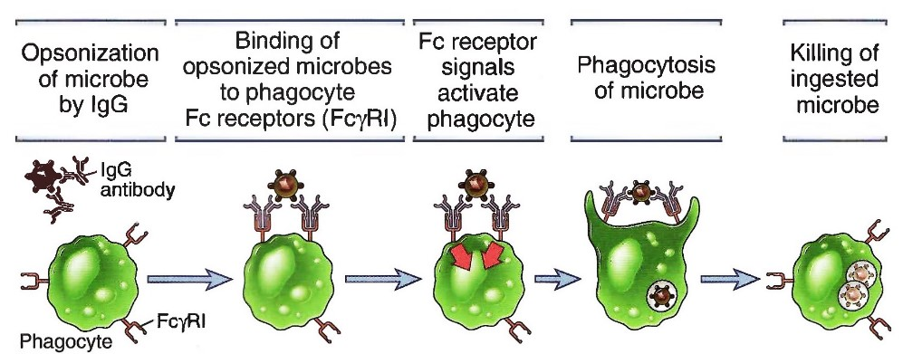
Once IgG antibodies have bound to an antigen, the IgG antibodies bind to the phagocyte via Fc receptors (Fc\(\gamma\)RI).
These signals (i.e., Fc receptor signals) then causes phagocytosis, thereby killing the antigen.
2.1.3 Extending Serum Half Lives via Binding of FC Neonatal Receptors (i.e., FcRn)
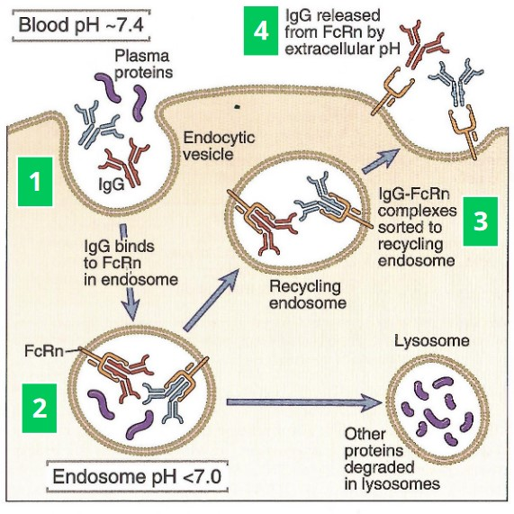
There are four main processes:
Endothelial cells engulf fluids containing IgGs and other plasma proteins from their surrounding environments3.
The early endosomes contain FcRns that bind to the IgG antibodies with a high affinity in spite of the slightly acidic environment (i.e., about pH 6).
IgG-FcRn complexes are directed to recycling endosomes while other proteins become degraded in the lysosomes.
When IgGs reach cell surfaces, the FcRn binding affinity is reduced due to the pH (i.e., at about 7.4 at this point) - the IgG antibody is released.
2.2 Fc Receptors
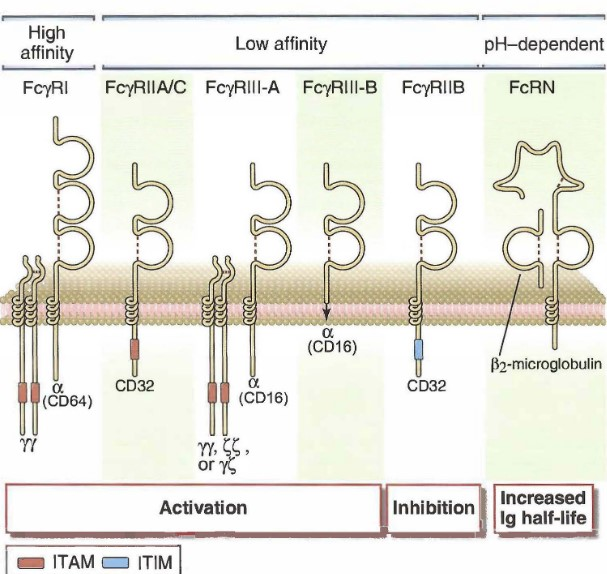
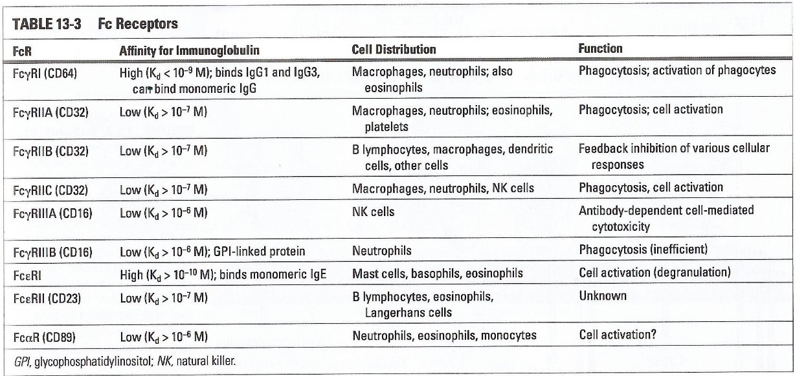
There are several possible receptors available for the Fc fragment of an antibody, of which the following are the most important:
Fc\(\gamma\)RI
This is important for phagocytosis and activation.
Fc\(\gamma\)RIIIA
This is for ADCC.
Fc\(\gamma\)RIIB
This receptor inhibits phagocytosis and cytokine release.
FcRn
These extend the serum half-life of the antibody.
2.3 IgG Subclasses
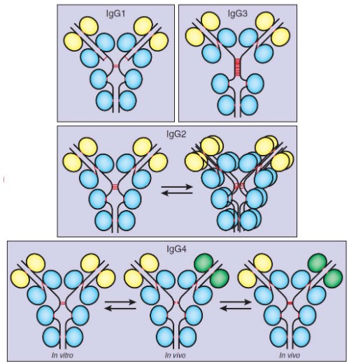
There are four main oligomers:
IgG1
This is always monomeric bivalent and is the most common subclass for therapeutic antibodies.
IgG2
This is in equilibrium between its monomeric bivalent and dimeric tetravalent forms.
This form is sometimes used to develop therapeutic antibodies.
IgG3
This is always monomeric bivalent, but not very commonly used to develop therapeutic antibodies.
IgG4
This subclass exists in three different states: monomeric bivalent (left), monomeric monovalent (middle), and mixed monovalent bi-specific forms (right).
This is used to develop therapeutic antibodies after Fc engineering to stabilize its monomeric bivalent form.
2.4 Steps to Designing a Therapeutic Antibody
There are a total of five steps to designing such an antibody:
2.4.1 Step #1: Understanding the Disease
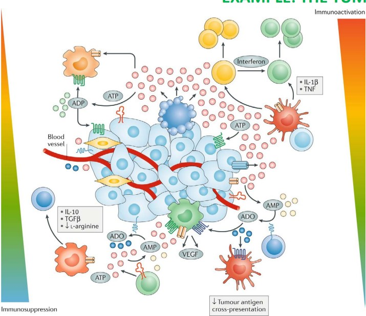
Antibody therapies are generally based on a solid understanding of the mechanisms that underlie the illness being targeted - in this case, cancer.
The diagram above shows a tumor cell that is surrounded by an excess of ATP molecules (i.e., the pink circles) in vivo. These ATP molecules may promote further release of ATP, cell growth (i.e., uncontrolled mitosis), and also immune and inflammatory cell responses.
2.4.2 Step #2: Identifying the Target Molecule and the Mode of Action
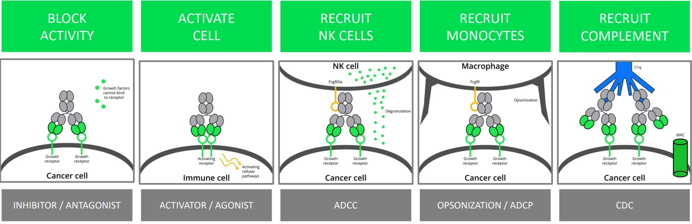
Depending on the intended modes of action and / or the target regions of the target (i.e., the epitope) for the antibody in question, a different subclass of IgG antibodies might need to be used.
Recall that IgG1 antibodies excel in targeting carbohydrates while IgG2 antibodies excel in targeting polysaccharides (e.g., sugar coatings).
2.4.3 Step #3: Generating the Antigen Binding Fragments
BS4019 lists two common methods of performing this step:
2.4.3.1 Using Animals
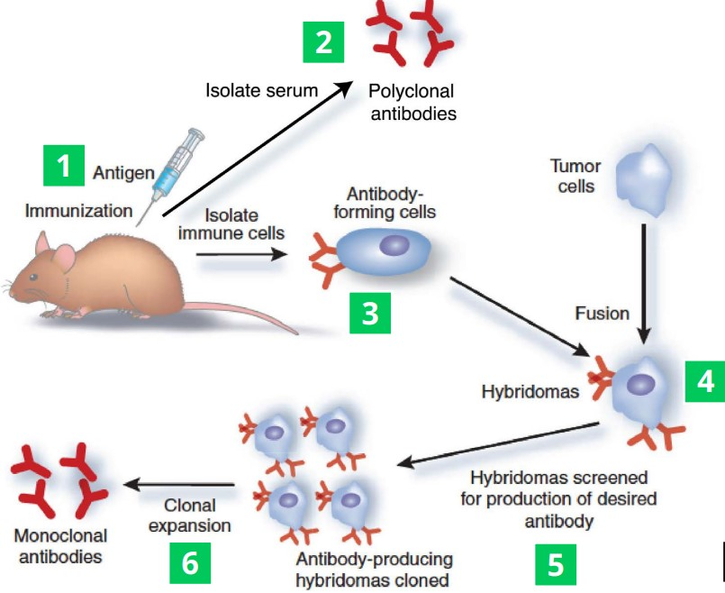
In this procedure, an antigen is first injected into an animal (i.e., step 1). A serum (i.e., step 2) can then be extracted to yield a polyclonal antibody solution4.
Once antibody-producing B-cells can be extracted from the animal, these same B-cells are also fused with tumor cells to form hybridoma cells (i.e., step 4). These cells divide indefinitely and in doing so, produce antibodies.
These antibodies are then screened5 to filter out the correct antibody for mass production before they are clonally expanded to form monoclonal antibodies.
2.4.3.1.1 An Alternative to Step 4
Bioinformatics may also be used to generate a suitable sequence to be fused with tumor cells’ genomes.
The VH and VL regions of the Fab fragment of the target antibody can then be amplified via in vivo methods (e.g., phage displays).
2.4.3.2 Phage Libraries
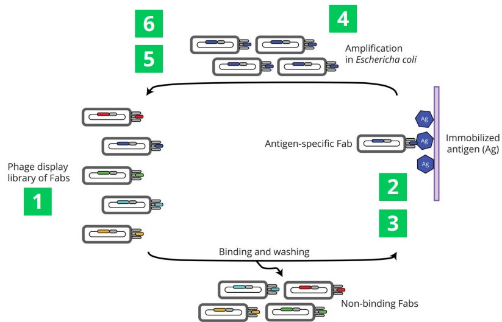
A library that contains about 1010 is first displayed at the surface of a bacteriophage before it is exposed to an antigen (which is typically the protein of interest that has been immobilized on a surface). In doing so, non-binding phages are washed away.
The binding phages then go on to infect E. coli cells - this process happens about two to six times. An ELISA assay is typically used after this to ensure binding. The phages may also be sequenced to identify Fab sequence.
2.4.3.2.1 Alternative Steps
Instead of developing a phage library, a yeast or mRNA display can be used instead.
Otherwise, next-generation sequencing can also be used in step 4.
2.4.3.3 Step #4: Selecting an Appropriate IgG Subclass
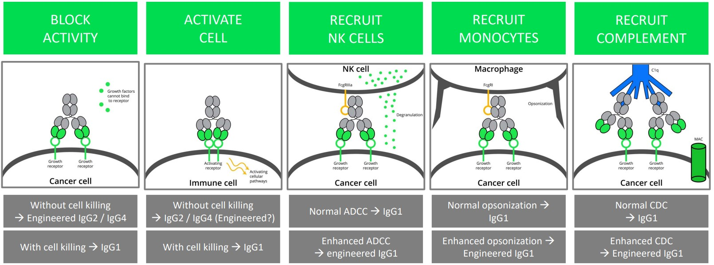
Recall that IgG3 antibodies are generally never used in therapeutic antibody production due to its unfavorable diamond configuration.
However, both IgG1 and IgG2 / IgG4 antibodies can be used with the following side effects for:
Blocking Activity
IgG2 / IgG4 antibodies can be used to accomplish this without destroying the cell.
IgG1 antibodies can be used too, but they cause cell death.
Cell Activation
IgG2 / (engineered) IgG4 antibodies can be used to do this without killing the cell.
IgG1 antibodies can be used for this purpose too, albeit they kill the cell.
Recruiting NK Cells
IgG1 antibodies can be used for this.
Engineered IgG1 antibodies can lead to enhanced ADCCs.
Recruiting Monocytes
IgG1 antibodies are used for this.
Engineered IgG1 antibodies can lead to enhanced opsonisation6.
Recruiting Complements
Normal CDCs can help recruit IgG1 antibodies.
Likewise, enhancing CDCs can help recruit enhanced IgG1 antibodies.
2.4.4 Step #5: Humanizing Antibodies
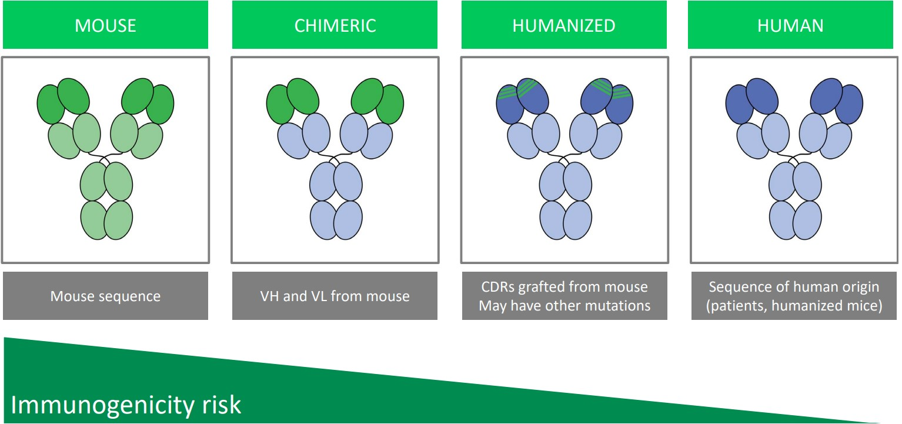
Humanizing antibodies decreases the risk of immunogenicity: the event that the body’s immune system attacks a non-self molecule.
Chimeric antibodies are antibodies whose VH and VL regions from mice antibodies have been grafted onto a human antibody’s Fab fragment.
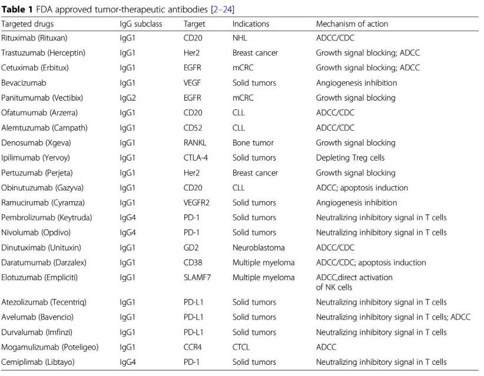
In a humanized antibody, parts of the Fab’s CDR have been grafted on from mouse antibodies.
Some examples of FDA-approved antibodies are shown in the above table. Depending on the suffix of the antibody’s name, one can guess the origin of the antibody - most notably:
- “-lumab” refers to a human antibody.
- “-umab” refers to a mouse antibody.
- “-ximab” refers to a chimeric antibody.
2.4.5 Step #6: Validating Molecules
See the following chapter for more information!
2.5 Phages and Library Displays
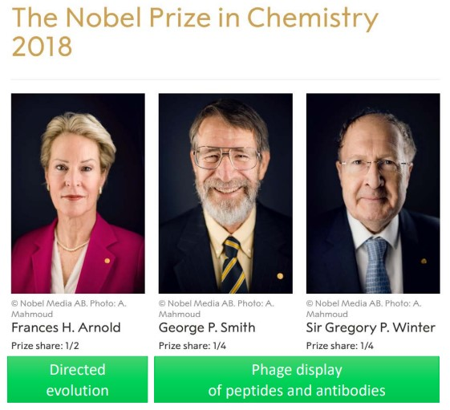
A possible alternative to using animals to generate antibodies include using phage libraries (as outlined in section 2.4).
The individuals behind the development of phage libraries have been awarded Nobel prizes (see above image).
2.5.1 Life Cycle of a Phage
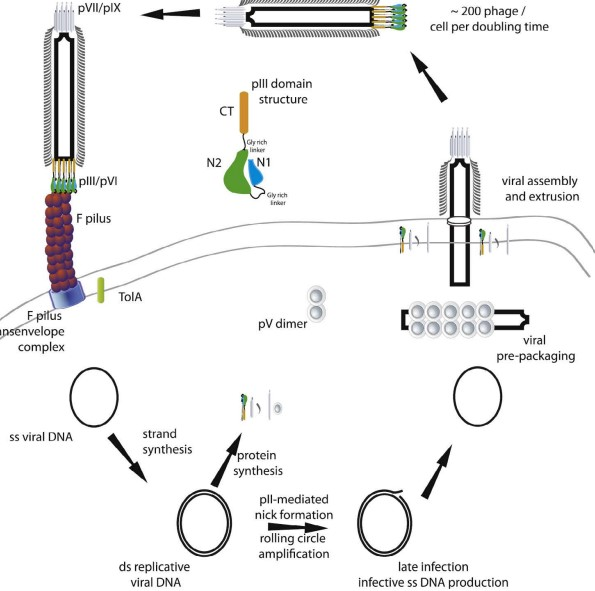
It is believed that M13 phage coat proteins are formed in the periplasm before they are packed into the phage in question.
Note that other phages (e.g., bacteriophage T7) can also be packed into the cytoplasm.
2.5.2 Phage Display Formats
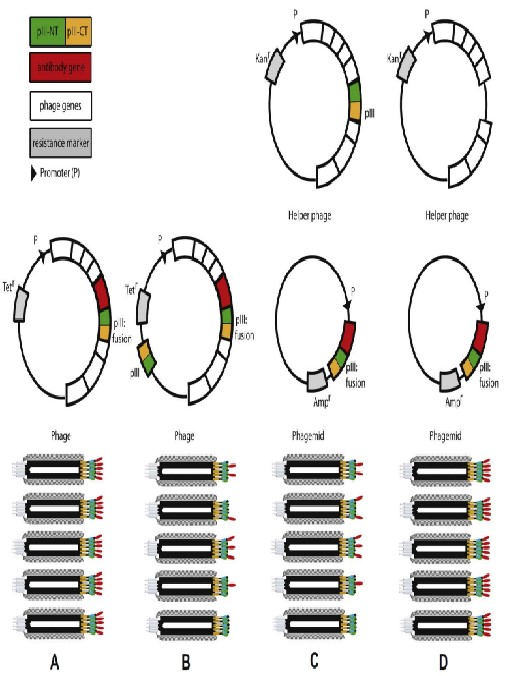
2.5.3 Library Creation from cDNA
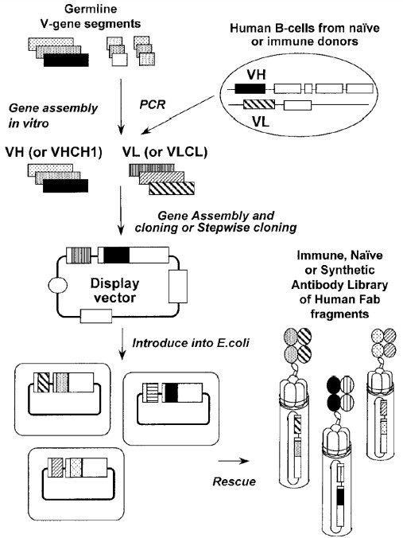
2.5.4 Kunkel Mutagenesis
This was also prof. Asial’s focus during his PhD.
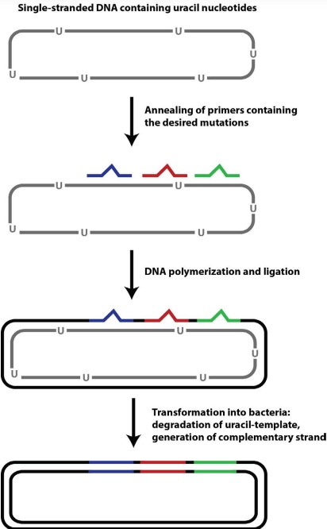
This stands for Antibody-dependent cellular cytotoxicity↩︎
This stands for Antibody-Dependent Cellular Phagocytosis↩︎
This is called pinocytosis↩︎
While this can be used in practice, the resulting serum will be very crude and may not be as effective or safe as using a solution of monoclonal antibodies.↩︎
This is because many different kinds of antibodies can be produced from the hybridoma cells.↩︎
This is a process whereby a pathogen is surrounded by antibodies.↩︎